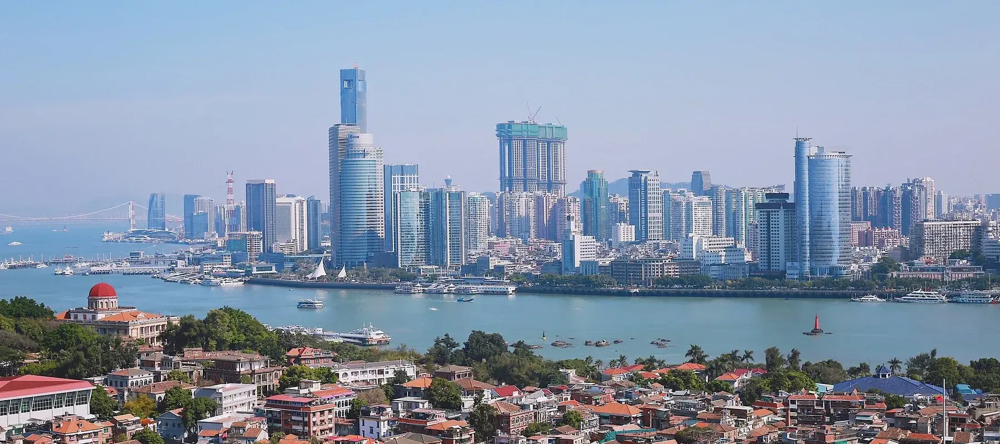
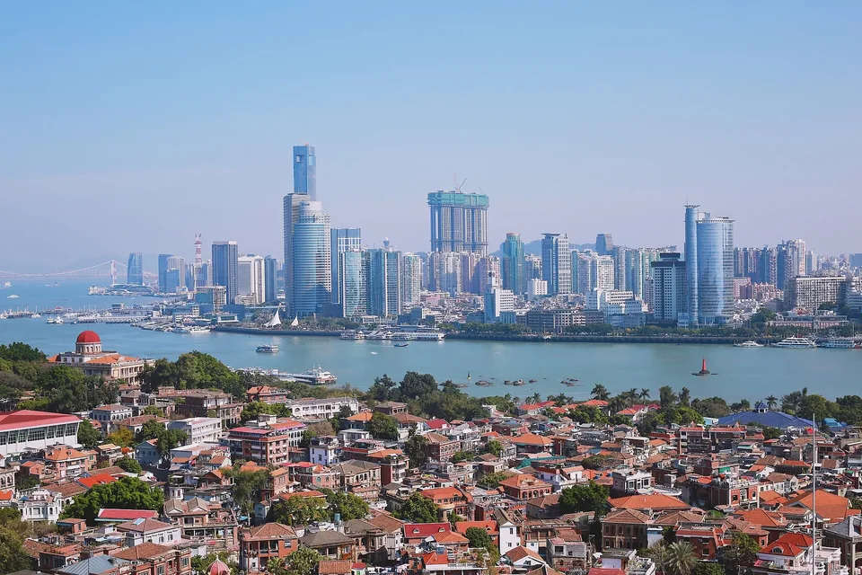
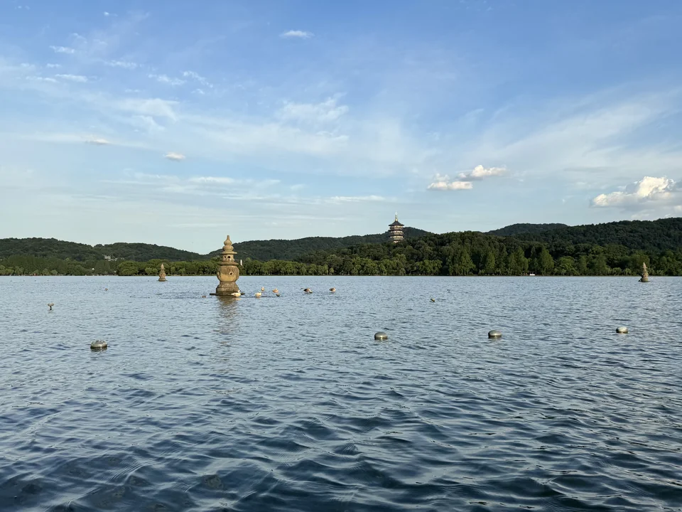
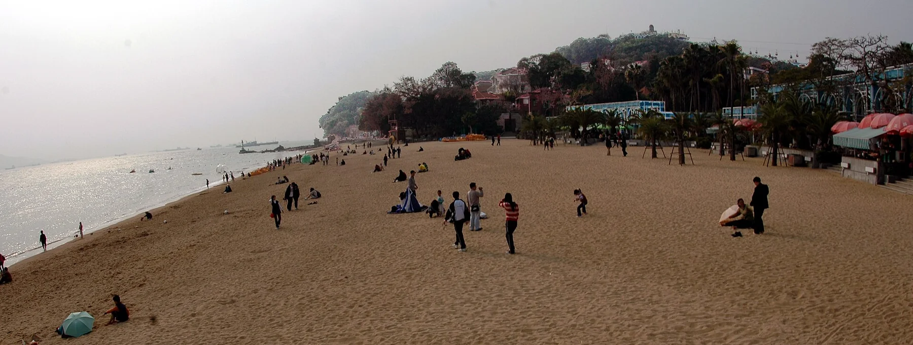
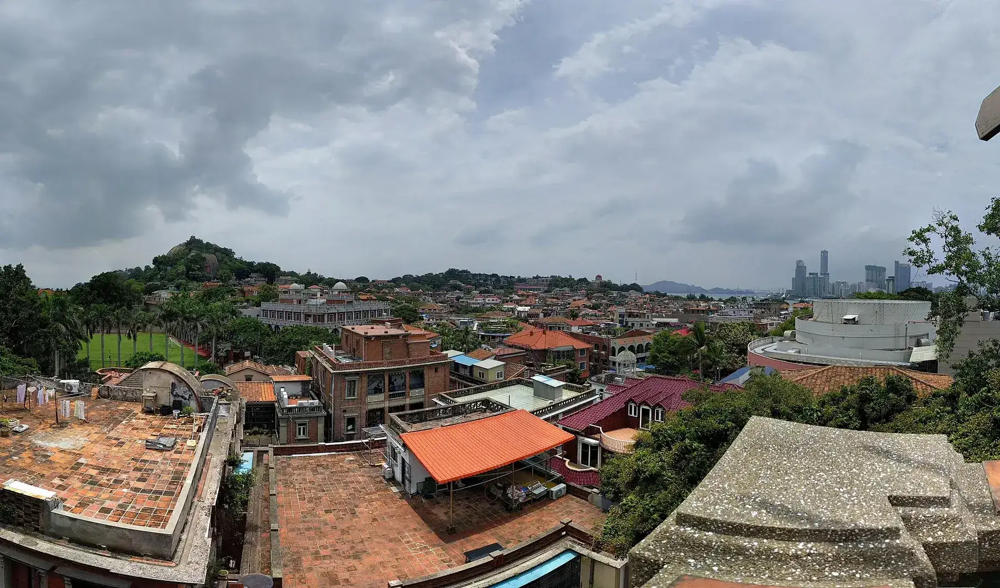

厦门鼓浪屿与厦门天际线
xiamen-hero.webp
摄影：-森屿-
许可：CC BY 2.5
等比例缩小、WebP压缩、移除EXIF；桌面Hero另做画幅裁剪，网页展示可能继续裁切。此图片继续遵循原许可的署名要求。
以下摄影用于发现首页的目的地灵感与品牌展示，来自Wikimedia Commons。它们不是用户的旅行照片，也不代表实时天气、到访证明或景点营业状态。感谢原作者以开放许可分享作品。

xiamen-hero.webp
摄影：-森屿-
许可：CC BY 2.5
等比例缩小、WebP压缩、移除EXIF；桌面Hero另做画幅裁剪，网页展示可能继续裁切。此图片继续遵循原许可的署名要求。


chengdu.webp
摄影：chensiyuan
许可：CC BY-SA 4.0
等比例缩小、WebP压缩、移除EXIF；网页展示可能裁切。此改编图片继续按CC BY-SA 4.0提供。

xiamen-coast.webp
摄影：Don Ramey Logan
许可：CC BY-SA 4.0
等比例缩小、WebP压缩、移除EXIF；网页展示可能裁切。此改编图片继续按CC BY-SA 4.0提供。

xiamen-aerial.webp
摄影：Sparktour
许可：CC BY-SA 4.0
等比例缩小、WebP压缩、移除EXIF；网页展示可能裁切。此改编图片继续按CC BY-SA 4.0提供。